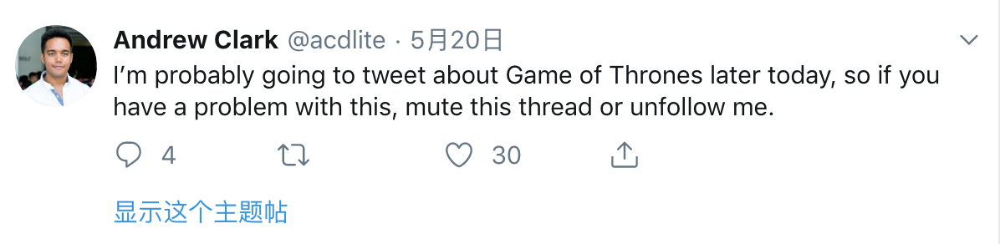

关于社交媒体中的关注功能
这个脑洞诞生在几个月前，那时正是 GoT 最终季热播的时候。当时在刷到了这样一条推特，作者是 React.js 框架的开发者，最近沉迷 GoT，连发的几条关于 GoT 剧情讨论的推。估计是作者的一些关注者想他吐槽了他发太多无关技术的推，希望看到更多关于 React 相关的推，所以作者发了这样一条推特来 “提醒” 那些关注者，他又要开始发 GoT 的推 😂。

那么问题来了，推特、微信、微博等各类社交媒体提供了有推荐、话题和用户等订阅内容的方式。其中用户订阅其实是一个粗粒度的筛选，你一旦订阅了某个用户，那么他发的所有动态都会进入到你的订阅列表中。但其实，其实这个用户发的所有的动态中，并非所有的内容都是我们感兴趣，特别是现在很多内容主都会在内容中掺加一些 “恰饭” 内容，或者其他一些主观色彩的东西，这些东西可能并不是订阅者感兴趣的，作为订阅者就只能“要么忍，那么滚”了。
所以，为什么这些社交媒体不实现一个在订阅基础上增加内容筛选的功能呢？ 比如，内容主发布内容时，可以对内容打上 tag ，或者平台来对内容分析和分类，订阅者在订阅某一内容时还可以增加更详细的内容类别订阅。比如，我在 B 站关注了一个游戏 up 主，我再增加一个 “游戏” 的内容分类订阅限制，这样这个 up 主发的一些乱七八糟的 vlog 之类的就不会出现在我的订阅表里了。
当然，现有的这些产品也有功能能实现类似的效果，那就是专栏，但是专栏一般都是用来发一些长文，或者系列文章的，不适合简短，零散的内容。而且，他毕竟是同普通的内容发布方式不一样，很多人都懒的用…，和平台自动打 tag 分类还是有一定差距的。
所以，订阅/关注的时候，能再多加这么个选项吗？